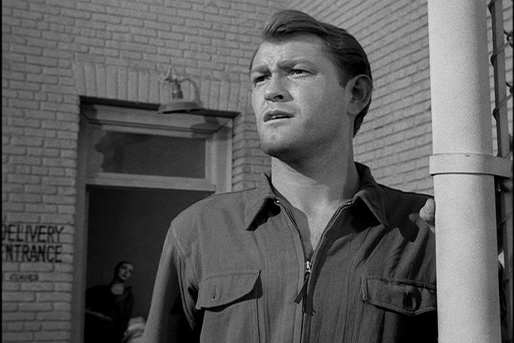

Top Ten Scariest Episodes: Season 1
June 26, 2018 by  Douglas Hawkes
Douglas Hawkes
What's going on everybody!? I'm coming back today with a list of the top ten scariest episodes of season 1 of the original series. I will say that season 1 is not the creepiest season but still has some scary ones in there. There are 36 episodes in season one so this is going to be hard guys and if I missed any please let me know down below in the comments so let's get started.
- The Fever
- Nightmare as a Child
- Elegy
- Perchance to Dream
- Mirror Image
- Lonely
- Where Is Everybody
- And When The Sky Was Opened
- The After Hours
- The Monsters Are Due On Maple Street
Coming in at number 10 we have "The Fever". Now many of us know Franklin, and that he wasn't exactly the most pleasant individual especially to his wife. This episode gave off some crazy vibes and I still think it's creepy to this day. After Franklin gets sucked in by the "one arm bandit" as they call it, the slot machine comes to life in his mind and follows him back to the room for one last play.
But before this happens Franklin viciously scolds his wife in front of everyone in the casino with some nasty words which is when I felt like he went over the deep end. The scene where the slot machine somehow pushed Franklin out of the window is the best and I think it's quite hilarious too. This episode definitely taught me to stay away from those who catch 'the fever'.
For number 9 we have "Nightmare as a Child". The creepiest things in this episode was the little child that was supposed to be the woman as a kid named Markie and the older man that came back into town to finish off the witness. I must say in this episode where as elephants have the best memory, the school teacher has the exact opposite. She stares in the face of herself as a child mainly the whole episode and she still acts so dumb.
Regardless of that, I still enjoyed this epsisode very much and I feel like the reason her memory was so bad is because of that repressed memory of her mother, it was so detrimental to her that she basically pushed it to the very back of her mind. For this man to come back after many years to take out the child of a poor woman he killed years ago because she was about to snitch in him for unethical practices is a very farfetched situation.
I picked 'Elegy' at number 8 because it's pretty scary to land on a foreign planet and see that everyone there looks like they're frozen in time. It's actually funny to see the astronauts frustrated because they go straight into the illusion reasoning then dabble on a time theory. Another scary aspect to this episode is the whole dialogue with the robot "Mr. Wickwire", just speaking with him brings about a sense of confusion and also a feeling of something that he is not disclosing.
When the robot comes back in the room with the the drinks and the music starts getting louder I honestly couldn't have been more scared but it was a dud then the real frightening started happening when the astronauts get sick fromt he drinks and then Mr.Wickwire goes on a rant about why he poisoned them saying "while there are men, there can be no peace". A great ending to the episode wich makes me think hard on those last thoughts from the robot, "Mr.Wickwire".
"Perchance to Dream" is not really an episode I like that much because the plot to me is kind of boring but that doesn't mean it's not a spooky one. When the patient starts telling the doctor about how he drives on the canyon at night to get home and then you see those eyes in the rear view mirror you really get creeped out and the music makes it 10 times better. If someone came into my office telling me if they feel asleep again they would die, I would have no idea what to think.
The episode gets a little darker when the patient tells the doctor about his next dream. Then your mind is blown when you see him abruptly crash out of the window and then actually see him die in the room by falling back asleep.
Coming in at number 6 we have "Mirror Image", a favorite of mine for a lot of reasons, one being that is a freaky episode. This episode has a lot of build up before it starts getting creepy, if you haven't seen it please be patient. I was most freaked out when you see the man's doppleganger at the end running off like some crazy guy.
Besides the scary you also have some comedy thrown in there by the old bus station attendant who reiterates how crazy he thinks the woman is. Again this episode does't have too much going on with it because of the build up but when the scary part hits at the end, they make it so ambiguous on what the replica of the other person actually is that it leaves you creeped out.
Number 5 is an outstanding episode and also freaks me out too. "Lonely" is about a convict that has to serve his punishment on an asteroid by himself for a crime he claims was self defense. It's already sounding creepy enough and that't not even the best part. Now you could look at this part as being either a good thing or creepy, I personally think it would be kind of creepy sending me a female robot that looks like a human but isn't.
I would probably be too scared to even turn it on, plus I think that would be a big tease to send me a female robot that looks like a human while I'm a man stuck on an asteroid. The scariest part happens when some officials come to take the prisoner back home because he was pardoned and he doesn't want to leave without the robot so the official has no other choice than to shoot the robot in the face revealing all it's wires and remind the prisoner that it's still a machine.

Not only is this episode an iconic debut for this series but it also hits number 4 on the scary list. The main scare tactic in this one is the fact that you don't see anyone else in the whole town and it even seems like the empty town is messing with him. I also love how they put a book in front of the guy that is titled, "The Last Man Alive", it really adds to the creep factor.
Another factor that sets this episode at number 4 is the loneliness they express in the episode. It expresses that mankind has a need for human interaction and companionship and without that the mind can create illusions which I think is a scary truth they expose.
This episode really freaked me out because it was like the space pilots really weren't supposed to make it back from the experimental trip they went on and when they actually started disappearing the whole episode takes a spooky turn. They claim to have blacked out for four hours when they broke the Earth's atmosphere and their ship actually disappeared from the radar, so when they were out there, I feel like they had an accident or ran into something that erased them from existence.
This concept of the episode is scary itself, and when you see the actual spaceship disappear from the hangar it's stupefying. A great episode like this wouldn't be complete without a fancy closing narration from Rod Serling saying, "and if any of you have any questions concerning an aircraft and three men who flew her, speak softly of them".
If you haven't seen this episode then PLEASE do yourself a favor and watch it, you won't regret it. This episode comes in second because creepy is an understatement for this brilliant episode. The mannequins alone are creepy but the twist in the end brings another level of fear. I also talk about this episode in my Creatures: Season 1 post so please check that out too if you haven't.
This episode really stands out in season one due to it's very far fetched story and vivid characters. I would say the scariest part in this episode is when the mannequins start speaking to her and then stop their poses to gather around Marsha or it could also be the part at the end when they really close in on the stiff, expressionless Marsha mannequin that is striking.
At number 1 one we have the scariest episode of season 1, none other than a classic episode and personally one of my favorites. This episode used to scare me so bad I'd have nightmares, I think it was because everyone thought everyone was a monster and because I wasn't used to seeing that much violence and blood in a black and white show so it put a little fear in me.
To me this episode was like a movie, it has the setup for exposition of the characters and their roles, the simple confrontation of the power going out causing chaos, and the spectacular twist in the end. Another frightening aspect of this story and why it's number one is because of the truth behind this episode being that their prejudices ulimately lead them to turmoil. This is a well done frightening episode written by Rod Serling, and is greatly appreciated.
Thanks again guy's for coming to 'Twilight Talk', if you liked this post show some support in the comments and let me know what kind of other posts you all might want to see.